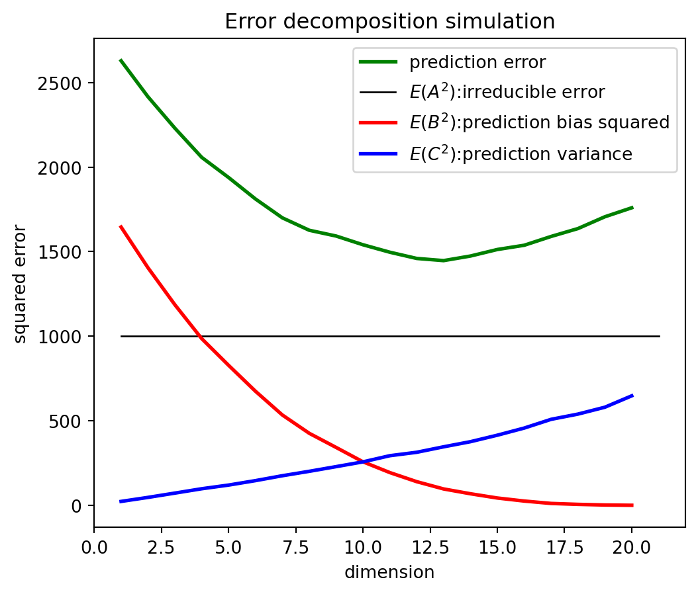

ntr = 50
p = 20
sigma_sq = 1000
n_iter = 1000
beta = np.sqrt(np.array(range(20, 0, -1)) / 2)
yhat_0 = np.zeros((20, n_iter))
err = np.zeros((20, n_iter))
for iteration in range(n_iter):
X = np.random.normal(loc=0.0, scale=1.0, size=(ntr, p))
Y = X @ beta + np.random.normal(loc=0.0, scale=np.sqrt(sigma_sq), size=ntr)
y0 = np.sum(beta) + np.random.normal(loc=0.0, scale=np.sqrt(sigma_sq), size=1)
for pnow in range(1, p + 1):
betahat = np.linalg.inv(X[:, :pnow].T @ X[:, :pnow]) @ X[:, :pnow].T @ Y
yhat_0[pnow - 1, iteration] = np.sum(betahat)
err[pnow - 1, iteration] = y0 - np.sum(betahat)
pred_err = np.mean(err**2, axis=1) # pred-error
pred_bias = (np.mean(yhat_0, axis=1) - np.sum(beta))**2 # E(B^2)
pred_var = np.var(yhat_0, axis=1) # E(C^2)Introduction to Statistical Learning
The Bias-Variance Tradeoff - Class 2
Giora Simchoni
gsimchoni@gmail.com and add #intro2sl in subject
Stat. and OR Department, TAU
The Bias-Variance Tradeoff
Squared error decomposition
For regression, take the standard model: \(y = f(x) + \epsilon\;,\;\epsilon \sim (0,\sigma^2)\)
Modeling approach (e.g. OLS), given training data \(T\), gives model \(\hat{f}(x)\)
- Assume we want to predict at new point \(x_0\), and understand our expected (squared) prediction error:
\(\mathbb{E}_{y_0, T}(y_0 - \hat{f}(x_0))^2 = \mathbb{E} \left( \underbrace{\left(y_0 - f(x_0)\right)}_{A} + \underbrace{\left(f(x_0) - \mathbb{E} (\hat{f}(x_0))\right)}_{B} + \underbrace{\left(\mathbb{E} (\hat{f}(x_0)) - \hat{f}(x_0)\right)}_{C}\right)^2\)
- Note we treat both the training data \(T\) (and hence \(\hat{f}\)) and the response \(y_0\) as random variables in our expectations
Which factors are random variables, dependent on \(T\)?
\(\mathbb{E}(y_0 - \hat{f}(x_0))^2 = \mathbb{E} \left( \underbrace{\left(y_0 - f(x_0)\right)}_{A} + \underbrace{\left(f(x_0) - \mathbb{E} (\hat{f}(x_0))\right)}_{B} + \underbrace{\left(\mathbb{E} (\hat{f}(x_0)) - \hat{f}(x_0)\right)}_{C}\right)^2\)
\[A = y_0 - f(x_0)\]
\[B = f(x_0) - \mathbb{E} (\hat{f}(x_0))\]
\[C = \mathbb{E} (\hat{f}(x_0)) - \hat{f}(x_0)\]
The bias-variance decomposition
\(\mathbb{E} \left( \underbrace{\left(y_0 - f(x_0)\right)}_{A} + \underbrace{\left(f(x_0) - \mathbb{E} (\hat{f}(x_0))\right)}_{B} + \underbrace{\left(\mathbb{E} (\hat{f}(x_0)) - \hat{f}(x_0)\right)}_{C}\right)^2 =\)
\(\;\;\;\;\;\;\;\;\;\;\;= \mathbb{E} A^2 + B^2 + \mathbb{E} C^2 + 2 B \cdot \mathbb{E} A + 2 \mathbb{E} (AC) + 2B \cdot\mathbb{E} C\)
\(\mathbb{E}(A^2) = \sigma^2\) the Irreducible error of a perfect model which knows the true \(f\)
\(B^2 = \left(f(x_0) - \mathbb{E} (\hat{f}(x_0))\right)^2\) is the squared bias — a measure of approximation error (note \(B\) is not a random variable)
\(\mathbb{E}(C^2) = \mathbb{E} \left(\mathbb{E} (\hat{f}(x_0)) - \hat{f}(x_0) \right)^2\) is the variance of the prediction — a measure of estimation error
\(B \cdot\mathbb{E} A = \mathbb{E} (AC) = B \cdot \mathbb{E} C = 0\) due to independence and mean-0 relations
The bias-variance decomposition
\[\mathbb{E}(y_0 - \hat{f}(x_0))^2 = \text{irreducible error} + \text{squared bias} + \text{variance}\]
Our general intuition: as model flexibility increases, bias (approximation error) decreases and variance (estimation error) increases
For many models we can calculate and show these effects on the bias and variance of the model
Simulation example: bias, variance and prediction error
Let’s generate data according to the following model: \(x \in \mathbb R^{20}\) has multivariate normal distribution, \(y = \sum_{j=1}^{20} \sqrt{(21-j)/2} \times x_j + \epsilon\;,\;\epsilon \sim N(0, 1000)\)
So the true model is in fact linear with \(\beta = (\sqrt{10},\sqrt{9.5},\dots,\sqrt{0.5})^t\)
We have \(n=50\) training observations, and want to predict at \(x_0 = (1,1,\dots,1)^t\; \Rightarrow\; y_0 = 43.6 + \epsilon\)
By generating many training sets and \(\hat{f}\)’s we can evaluate bias, variance and prediction error
Complexity parameter: number of variables included in the model (only the first coordinate, first two, …)
plt.plot(range(1, p + 1), pred_err, color='green', lw=2, label='prediction error' )
plt.plot([1, p + 1], [sigma_sq, sigma_sq], color='black', lw=1, label='$E(A^2)$:irreducible error')
plt.plot(range(1, p + 1), pred_bias, color='red', lw=2, label='$E(B^2)$:prediction bias squared')
plt.plot(range(1, p + 1), pred_var, color='blue', lw=2, label='$E(C^2)$:prediction variance')
plt.xlabel('dimension')
plt.ylabel('squared error')
plt.title('Error decomposition simulation')
plt.legend(loc="upper right")
plt.show()
The Classification Setting
Misclassification rate
- Let \(y \in \{0, 1, \dots, J - 1\}\)
- For a classifier \(\hat{f}(x)\), define the indicator \(I(y \neq \hat{y})\)
- For a sample \(T = \{(x_1, y_1 ) \dots (x_n, y_n)\}\) the training error (misclassification rate) is: \(\frac{1}{n}\sum_i I(y_i \neq \hat{y}_i)\)
- For unknown observations \((x_0, y_0)\) we are interested in the expected error rate, but we look at test error: \(\frac{1}{m}\sum_i I(y_{i,0} \neq \hat{y}_{i,0})\)
- This error rate can be decomposed into three terms as well!
We want a predictor which drives the error rate to minimum. What is that predictor?
Bayes decision boundary
Assume the conditional probability \(P(Y = 1 | X)\) is a nice, slowly changing function of \(X\):
The Bayes decision boundary is where \(P(Y = 1 | X) = 0.5\)
The Bayes classifier
- For a \(J\)-class classification problem, assume we know the probabilities \(P(Y = j | X = x) \space \forall j, x\)
- The best classifier is the Bayes classifier: \(\hat{f}(x) = \arg\max_j P(Y = j | X = x)\)
- For a \(2\)-class problem we can use the Bayes decision boundary and reach a simpler notation: \(\hat{f}(x) = 1 \space \forall x \space s.t. \space P(Y = 1 | X = x) > 0.5 \text{ otherwise } 0\)
How is Bayes classifier “best”?
\(E_Y(I(y \neq \hat{y})| X) = P(Y = 1 | X) \cdot I(\hat{y} = 0) + P(Y = 0 | X) \cdot I(\hat{y} = 1)\)
- Suppose \(P(Y = 1 | X) = 0.7\), between \(\hat{y} \in \{0, 1\} \Rightarrow\) choose \(\hat{y} = 1\) to minimize \(E_Y(I(y \neq \hat{y})| X)\)
- Suppose \(P(Y = 1 | X) = 0.3\), between \(\hat{y} \in \{0, 1\} \Rightarrow\) choose \(\hat{y} = 0\) to minimize \(E_Y(I(y \neq \hat{y})| X)\)
- Put differently the Bayes classifier \(\hat{f}(x) = \arg\max_j P(Y = j | X = x)\) minimizes expected error rate!
The Bayes classifier is purely theoretical!

Even for this training data, the Bayes classifier will have an irreducible error rate! (classes overlap)
The Bayes error rate
- What is the Bayes classifier error?
- For a given \(x\): \(BE = 0 \cdot P(correct) + 1 \cdot P(error) = 1 - \max_j P(Y = j | X = x)\)
- Therefore for a test set the expected error rate is given by: \(1 - E\left(\max_j P(Y = j | X = x)\right)\)
- This bound is the lowest error rate achievable (under our assumptions), similar to the irreducible error in regression
- Sampling additional test observations in the example we reach test error rate of 0.205
But in practice the conditional probability is unknown. How can we approximate it?
The KNN Classifier
K-Nearest Neighbors
- Let \(K\) be a positive integer, and let \(T\) be the training set
- Classification rule for new observation \(x_0\):
- Let the \(K\)-neighborhood \(\mathcal{N}(x_0)\) the \(K\) points closest to \(x_0\) in \(T\)
- \(\hat{f}(x_0) = \arg\max_j \left[\sum I(y(x) = j) | x' \in \mathcal{N}(x_0)\right]\)
- Under what conditions is it an approximation to the Bayes classifier?
KNN vs. Bayes classifier
(For \(K = 10\) test error rate 0.270, only slightly worse than Bayes error rate!)
KNN and bias-variance tradeoff
- How can we efficiently find a neighborhood of an observation?
- For small \(K\): classifier is flexible but has high variance
- For large \(K\): classifier is stable but suffers from high bias
- There is no way to escape this bias-variance tradeoff
- So how to choose \(K\)?
How to choose \(K\)?

- Sometimes we have prior knowledge, can choose \(K\) from theoretical considerations
- In most real-life problems, choosing \(K\) requires some additional data we use to validate our model